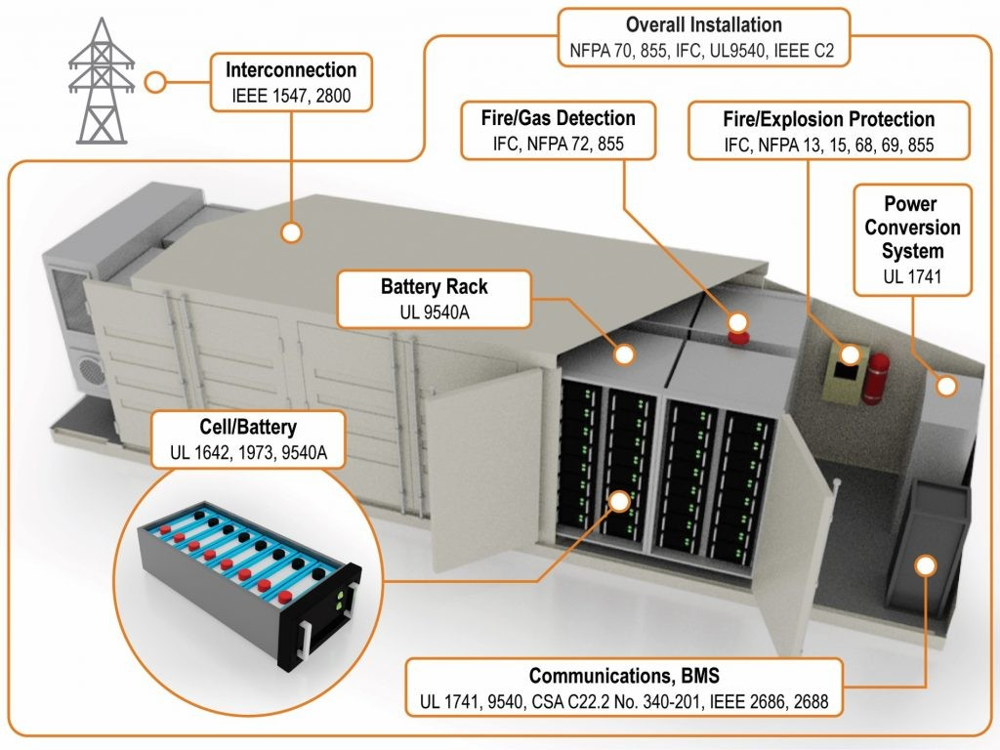
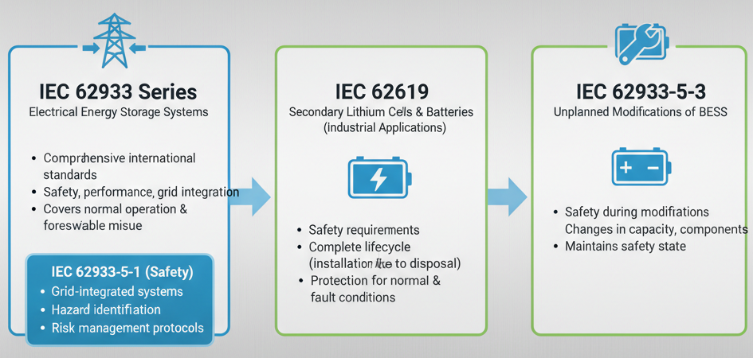
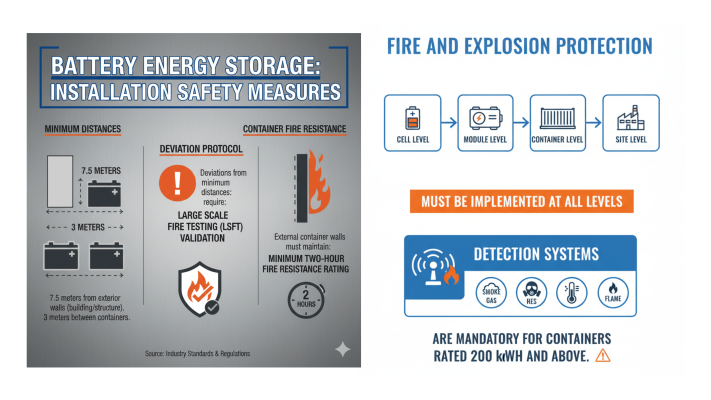
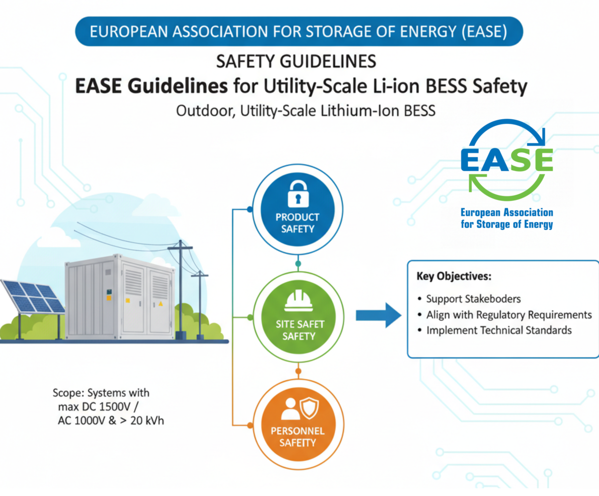
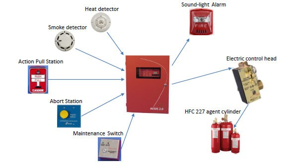
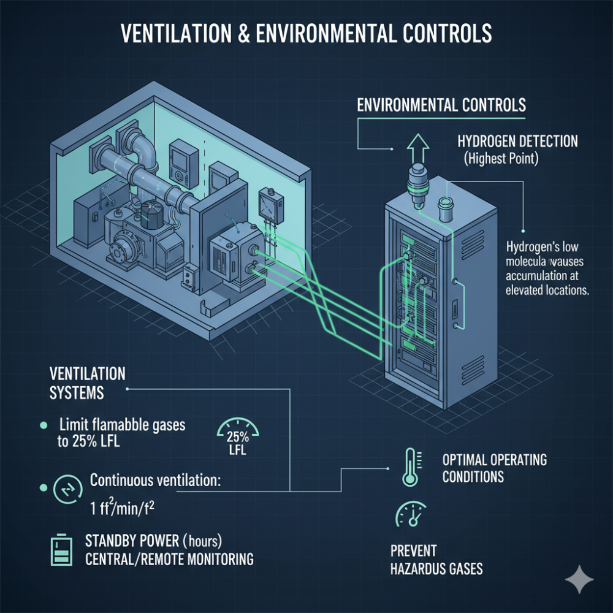
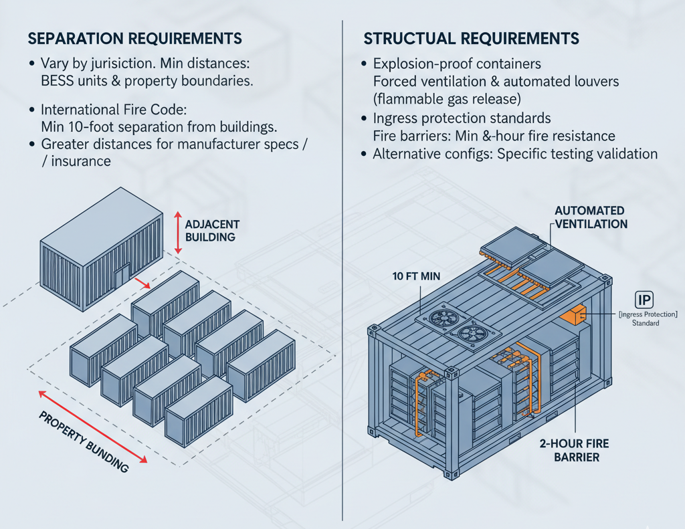

As Battery Energy Storage Systems become increasingly critical to India's renewable energy infrastructure and global energy transition, ensuring comprehensive safety standards has emerged as the paramount concern for developers, operators, and regulators. The rapid deployment of BESS installations worldwide has necessitated the evolution of robust safety frameworks that address the unique challenges posed by large-scale energy storage technologies.
Global Safety Standards Framework
The international landscape of BESS safety is governed by several interconnected standards organizations, each providing specialized requirements for different aspects of system safety and performance.
UL Standards: North American Safety Foundation
UL 9540 serves as the cornerstone safety standard for energy storage systems and equipment in North America. This system-level certification evaluates the safety of complete BESS installations, including batteries, inverters, controllers, and thermal management components working together as an integrated system. The standard requires third-party testing by Nationally Recognized Testing Laboratories (NRTLs) and ensures compatibility between all system components under various operational and fault conditions.
Complementing UL 9540, UL 9540A provides a standardized test methodology for evaluating thermal runaway fire propagation in battery systems. This testing protocol subjects entire battery units to intentional ignition with suppression systems disabled to evaluate real-world fire behavior under worst-case conditions. The results inform appropriate fire mitigation strategies and system placement requirements, making it essential for large-scale installations exceeding 50 kWh.

UL 1973 specifically addresses the safety of batteries used in stationary and motive applications, establishing requirements for individual battery cells, modules, and packs. This standard evaluates thermal runaway resistance, mechanical stress tolerance, and electrical fault protection at the component level.
IEC Standards: International Framework
The IEC 62933 series establishes comprehensive international standards for electrical energy storage systems, covering safety, performance, and grid integration requirements. IEC 62933-5-1 specifies safety requirements for grid-integrated electrical energy storage systems, including hazard identification and risk management protocols. The series addresses both normal operation conditions and reasonably foreseeable misuse scenarios.
IEC 62619 focuses specifically on safety requirements for secondary lithium cells and batteries in industrial applications. This standard covers the complete lifecycle from installation through disposal, establishing protection measures for both normal operation and expected fault conditions.
IEC 62933-5-3 addresses safety requirements during unplanned modifications of BESS installations, including changes in energy storage capacity, battery chemistry, or system components. This standard recognizes that modifications can impair the original safety state and establishes protocols for maintaining safety during system changes.

NFPA Standards: Fire Safety Leadership
NFPA 855, the Standard for the Installation of Stationary Energy Storage Systems, provides mandatory requirements for fire safety and emergency response. The 2026 edition introduces significant enhancements including coverage of new battery chemistries such as iron-air, nickel-hydrogen, and zinc-bromide technologies. The standard mandates fire suppression systems for all ESS installations and establishes two pathways for explosion control: deflagration management using blast panels or explosion prevention through exhaust ventilation.
The standard requires minimum separation distances between BESS units and establishes comprehensive emergency response planning requirements. NFPA 855 also introduces retroactivity provisions for existing systems that were not originally listed to UL 9540, requiring hazard mitigation analysis and potential safety upgrades.

Regional Regulatory Developments
India's Emerging Safety Framework
India's Central Electricity Authority (CEA) has issued draft safety guidelines specifically for BESS installations, marking a significant step toward comprehensive national standards. The proposed regulations introduce stringent safety requirements including:
Two-fault tolerance systems ensuring safe operation or shutdown even after two separate faults occur simultaneously. Battery systems must maintain protection under all conditions including overcharge, over-discharge, short circuit, and operation outside defined temperature ranges.
Comprehensive monitoring requirements mandate Battery Management Systems monitor and record voltage, temperature, current, and thermal runaway at both cell and module levels. Visual and audio alarms must activate when parameters exceed manufacturer specifications, with automatic charging and discharging shutdown when temperature limits are crossed.
Installation safety measures require minimum distances of 7.5 meters from exterior walls for battery containers and 3 meters between containers. Deviations require Large Scale Fire Testing (LSFT) validation, while external container walls must maintain minimum two-hour fire resistance ratings.
Fire and explosion protection must be implemented at cell, module, container, and site levels. Detection systems for smoke, gas, heat, and flame are mandatory for containers rated 200 kWh and above.

International Harmonization Efforts
The European Association for Storage of Energy (EASE) has developed comprehensive safety guidelines specifically for outdoor, utility-scale lithium-ion BESS installations. These guidelines support stakeholders across the value chain in implementing safety practices that align with regulatory requirements and technical standards.
The guidelines address systems with maximum DC voltage of 1500V or maximum AC voltage of 1000V and energy storage capacity exceeding 20 kWh. They focus on three key areas: Product Safety, Site Safety, and Personnel Safety, providing recognized industry best practices for demonstrating safety compliance.

Critical Safety Technologies and Requirements
Thermal Runaway Prevention and Mitigation
Thermal runaway represents the most severe failure mode in BESS installations, where heat generation exceeds dissipation capability, creating a dangerous self-perpetuating cycle. The phenomenon can rapidly escalate, causing adjacent cells to enter thermal runaway and resulting in cascading failures across entire systems.
Modern mitigation approaches include immersion cooling technologies that submerge battery cells in dielectric fluids, dissipating heat directly at its source and preventing propagation. Advanced thermal barriers physically separate individual cells, creating thermal shields that prevent heat and flame transfer to neighboring cells during thermal events.
AI-driven Battery Management Systems monitor temperature, voltage, and performance metrics in real-time, enabling early detection of anomalies through predictive analytics. However, these systems cannot physically intervene once thermal runaway begins, emphasizing the importance of prevention-focused design.
Fire Detection and Suppression Systems
Comprehensive fire protection requires integrated systems operating at multiple levels. Detection systems must include smoke, gas, heat, and flame sensors with automatic activation of ventilation systems when flammable gas concentrations exceed 25% of the Lower Flammable Limit (LFL). Gas detection systems must initiate distinct audible and visible alarms, transmit alerts to approved monitoring locations, and automatically de-energize battery chargers.
Suppression systems must be designed according to NFPA 13 standards with considerations for the unique challenges of battery fires. Current best practices focus on preventing fire spread rather than direct suppression, as thermal runaway can continue propagating even after visible flames are extinguished.

Ventilation and Environmental Controls
Ventilation systems must limit maximum concentration of flammable gases to 25% of LFL or provide continuous ventilation at minimum rates of 1 ft³/min/ft². Systems require standby power for minimum two hours and must be supervised by central or remote monitoring stations.
Environmental controls maintain optimal operating conditions while preventing accumulation of hazardous gases. Hydrogen detection systems must be positioned at the highest points in enclosures, as hydrogen's low molecular weight causes it to accumulate at elevated locations.

Emergency Response and Personnel Safety
Comprehensive Emergency Planning
Effective emergency response requires site-specific risk assessment evaluating system design, environmental factors, and potential failure scenarios. Emergency plans must establish clear roles and responsibilities for operators, maintenance teams, incident commanders, and external first responders.
Communication protocols ensure rapid notification of emergency responders with pre-established familiarity regarding site layouts, potential hazards, and emergency shutdown procedures. Collaboration with local fire departments before incidents occur enables more effective response coordination.
First Responder Considerations
Safety protocols require Personal Protective Equipment including self-contained breathing apparatus to protect against hazardous emissions. Minimum isolation zones of 330 feet must be established for large commercial BESS installations, with responders positioned upwind and uphill from potential hazards.
Tactical approaches focus on preventing fire spread to neighboring batteries and structures rather than direct fire suppression. Current guidance recommends allowing battery fires to burn while protecting adjacent infrastructure, as water application effectiveness on battery fires remains under research.
Installation and Operational Requirements
Site Design and Configuration
Separation requirements vary by jurisdiction but typically mandate minimum distances between BESS units and from property boundaries. The International Fire Code requires minimum 10-foot separation between BESS and buildings, though greater separations may be necessary based on manufacturer specifications or insurance requirements.
Structural requirements include explosion-proof containers with forced ventilation, automated louvers for flammable gas release, and adherence to ingress protection standards. Fire barriers must provide minimum two-hour fire resistance, with alternative configurations requiring specific testing validation.

Monitoring and Control Systems
Battery Management Systems must continuously monitor individual cell parameters including temperature, voltage, and current. Systems must provide full monitoring of electrical power and operational data with visual and audible alarms for potential safety hazards.
Data acquisition systems enable remote monitoring and tracking with internet connectivity distinct from facility networks. Protective relays, circuit breakers, and fuses must provide self-protection against internal electrical faults based on comprehensive short circuit and coordination studies.
Certification and Compliance Pathways
Multi-Regional Certification Requirements
Global BESS deployment requires understanding diverse certification requirements across markets. North American installations require UL 9540 system-level certification with UL 9540A testing results for installations exceeding standard capacity or spacing limitations. European markets require CE marking under the EU Battery Regulation, though this represents market access authorization rather than safety certification.
Asian markets increasingly adopt IEC-based standards with localized requirements. India's BIS standards align with international IEC norms while China implements GB standards derived from IEC benchmarks. Australia requires Clean Energy Council approval with products listed on approved registries.